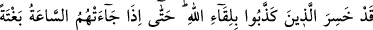
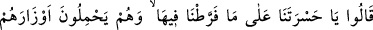
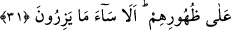
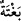
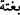
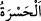

Yani, dünyada iken onu inkar etmeniz sebebiyle şimdi artık gözlerinizle gördüğünüz
azabı tadın.
Âyette “zevk” yani tatma ifadesi özellikle zikredilmiştir. Çünkü inkârcılar
cehennemde azabın her nev’ini görecekler, amellerine göre çeşit çeşit cezaya
uğratılacaklardır. Bir merhale sonra gördükleri azabı, öncekinden daha şiddetli
bulacaklardır.
31. Allah’ın huzuruna çıkmayı yalanlayanlar gerçekten ziyana uğramıştır.
Nihayet onlara Kıyamet vakti ansızın gelip çatınca, onlar, günahlarını sırtlarına
yüklenerek diyecekler ki: “Dünyada iyi amelleri terketmemizden dolayı vah bize!”
Dikkat edin, yüklendikleri şey ne kötüdür!
“Allah’ın huzuruna çıkmayı yalanlayanlar” öldükten sonra tekrar dirilmeyi inkâr
edenler aldandılar, “gerçekten ziyana uğradılar. Nihayet kendilerine ansızın kıyamet
vakti gelip çatınca”ya kadar yalanlamaya devam ettiler.
“__WORD__”in manası, herhangi bir şeyin insan hissetmeden ansızın meydana gelmesidir.
Öyleki süratlice meydana gelen şeyi insan hissedecek olsa ona “__WORD__” = aniden oldu”
denilmez. İşte bu sebepledir ki, insanların başına aniden kopacak olan kıyametin
vaktini, Allah’dan başka hiç kimse bilemez, hissedemez. Bunun için kıyamete “ansızın
gelecek bir an” anlamında “saat” denilmiştir. Kıyamete, saat denilmesinin bir sebebi de
belli bir noktaya doğru süratle ilerlemesinden dolayıdır. Her iki saat arasındaki
mesafede alıp verilen nefeslerdir.
Özet olarak âyetin manası: “Onlar, kıyametin kopması kendilerine ansızın gelinceye
kadar yalanlamaya devam ettiler.” demektir.
Eğer: “Onlar ölünceye kadar yalanladılar, kıyamet kopuncaya kadar değil.” denilirse,
buna cevaben deriz ki: Ölüm vakti, dünyâ vakitlerinin sonu ve âhiret vakitlerinin
başıdır. Bu vakte kadar yalanlayan, kıyametin kopması kendisine ansızın gelinceye
kadar yalanlamış demek olur. Bu sebeple Rasûlullah (s.a.): “Kişi öldüğünde onun
kıyameti kopmuş demektir.”[95] buyurmuşlardır.
“Günahlarını sırtlarına yüklenmiş olarak; hayatta iyi işler yapmaktan geri kalıp
günah işlememizden ötürü vah bize!” derler.
“__WORD__”; şiddetli pişmanlık ve elem demektir. Ona nida etmek, mecâzîdir. Çünkü
hasret, çağrılacak bir şey değildir. Buradaki mânâsı, inkârcıların düştükleri çok acıklı
durumu mübalağa ile vurgulamaktır. Sanki onlar pişmanlığa seslenerek şöyle derler: